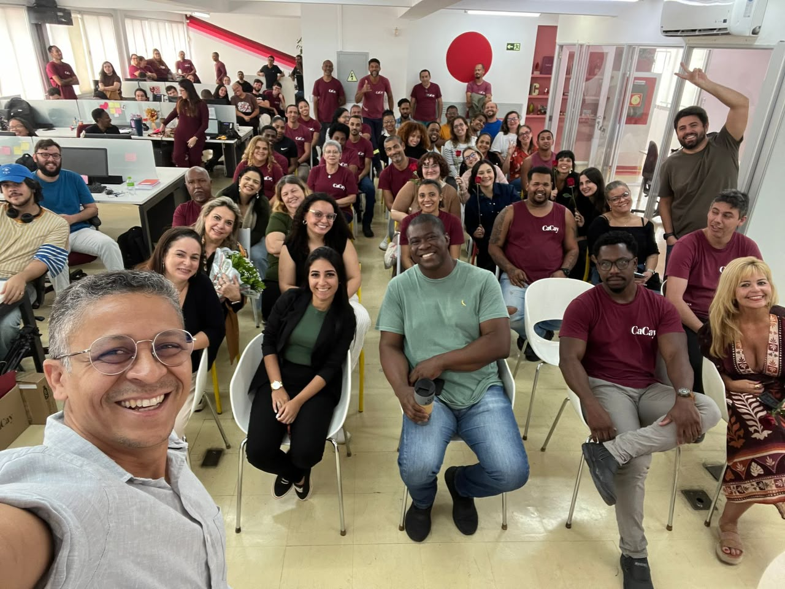
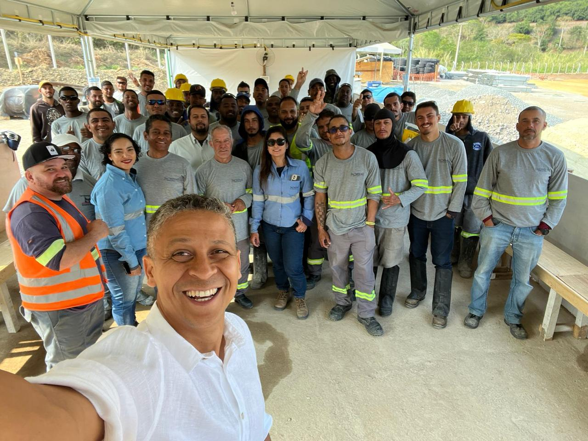
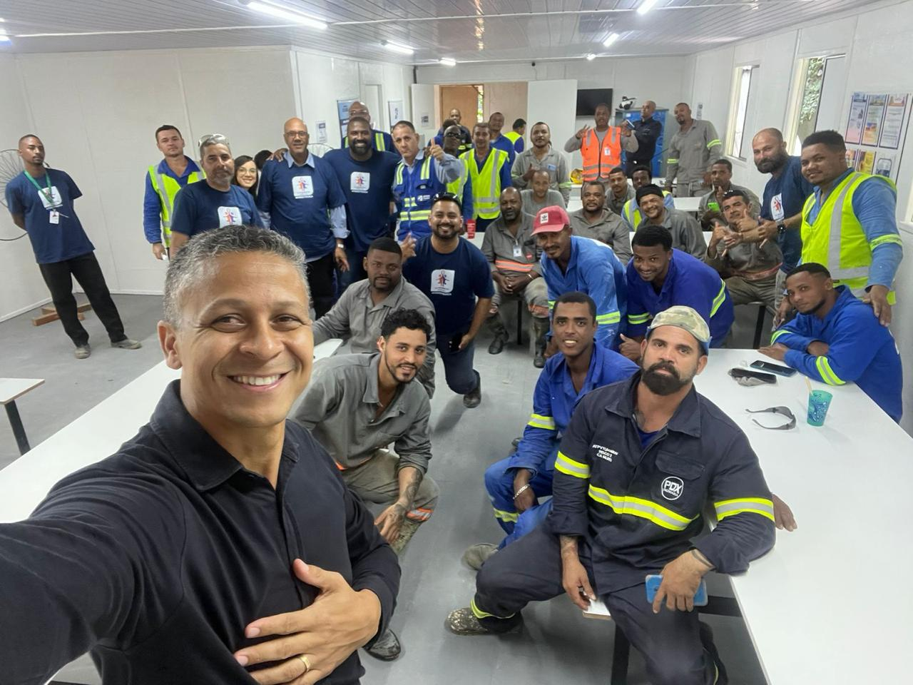

Por que Leonardo Cruz
Uma perspectiva que a maioria dos psicólogos não tem
Antes de atuar como psicólogo, Leonardo trabalhou na área de Saúde e Segurança do Trabalho — com medicina ocupacional, gestão de riscos e Normas Regulamentadoras. Ele conhece a realidade operacional de empresas, canteiros de obra e ambientes industriais não só pela teoria, mas pela prática. Essa trajetória garante uma interlocução direta com RH, SESMT e lideranças, e laudos técnicos fundamentados em vivência real.
Fala a língua da empresa
Entende as dinâmicas de RH, SESMT e gestão operacional — não precisa de intermediários para dialogar com quem decide.
Experiência em campo real
Vivência prévia em SST significa laudos e avaliações ancorados na realidade operacional, não apenas em protocolos clínicos.
Psicologia + Gestão de Pessoas
Integra Psicologia Clínica, Saúde Ocupacional e Gestão de Pessoas — cobrindo desde o indivíduo até o impacto sistêmico na organização.
O que mudou
A NR-1 e os riscos psicossociais
A atualização da Norma Regulamentadora NR-1 passou a exigir que as empresas identifiquem, avaliem e gerenciem os fatores de risco psicossociais no ambiente de trabalho — integrando esses riscos ao Programa de Gerenciamento de Riscos (PGR).
Isso inclui: assédio moral, sobrecarga de trabalho, conflitos interpessoais, insegurança no emprego, pressão por resultados e qualquer fator emocional que possa comprometer a saúde dos colaboradores.
Empresas que não adequarem sua documentação e práticas estão sujeitas a autuações. E mais do que a obrigação legal — cuidar da saúde mental da equipe impacta diretamente produtividade, retenção e clima organizacional.
O que a NR-1 exige
Identificação e avaliação dos riscos psicossociais integrada ao PGR, com medidas preventivas documentadas.
Quem pode fazer
Psicólogo habilitado, com formação técnica e registro ativo no CRP — garantindo validade legal dos laudos e documentos produzidos.
Prazo de adequação
A exigência já está em vigor. Empresas devem incluir os riscos psicossociais no PGR o quanto antes para evitar irregularidades.
Serviços oferecidos
Do diagnóstico ao documento
Uma assessoria completa que cobre todas as etapas — do levantamento inicial à entrega dos documentos técnicos exigidos pela legislação, com suporte contínuo se necessário.
Avaliação Psicossocial Ocupacional
Aplicação de entrevistas individuais e bateria de testes psicológicos reconhecidos pelo CFP para mapeamento completo dos riscos.
Levantamento de Riscos Psicossociais
Identificação e análise dos fatores emocionais e relacionais que afetam o clima organizacional e a saúde dos colaboradores.
Laudo Psicossocial e Parecer Técnico
Documentação técnica completa com validade legal, elaborada com rigor ético e respaldo do Conselho Federal de Psicologia.
Composição do PGR
Elaboração de evidências técnicas para integração ao Programa de Gerenciamento de Riscos, conforme exigências da NR-1.
Palestras e Workshops In Loco
Intervenções presenciais no ambiente da empresa — obras, indústrias, academias, escritórios — adaptadas ao perfil de cada equipe.
Orientações em Saúde Mental Ocupacional
Reuniões de alinhamento técnico, treinamentos para lideranças e acompanhamento periódico para manutenção dos resultados.
Para quais empresas
Experiência em campo real
Com atuação comprovada em ambientes corporativos, industriais e de serviços, Leonardo Cruz adapta as intervenções à realidade de cada setor.
Associações e academias
Avaliação e suporte psicossocial para colaboradores de redes de academias, clubes e associações esportivas.
Construção civil
Intervenções em canteiros de obra com equipes operacionais — contexto de alta pressão e riscos ocupacionais elevados.
Indústria e infraestrutura
Avaliação de riscos psicossociais em ambientes industriais com foco em saúde, produtividade e conformidade legal.
Atuação em campo
De onde você está, estamos lá
Palestras e intervenções realizadas em empresas, canteiros de obra e ambientes industriais — levando a psicologia para onde as equipes vivem sua rotina.

Palestra corporativa · Empresa de serviços
Intervenção in loco · Construção civil
Workshop · Equipe industrialComo funciona
Processo claro, do início ao fim
Cada etapa é conduzida com transparência, ética e alinhamento constante com a equipe de RH ou liderança responsável.
1. Reunião inicial
Entendimento do contexto, porte da empresa, perfil dos colaboradores e urgência da adequação.
2. Avaliação em campo
Entrevistas individuais, aplicação de testes e observação do ambiente de trabalho.
3. Análise e relatório
Produção do laudo psicossocial, parecer técnico e evidências para compor o PGR.
4. Entrega e alinhamento
Apresentação dos resultados, orientações técnicas e definição de próximos passos se necessário.
Sua empresa já está adequada à NR-1?
Entre em contato para uma avaliação inicial sem compromisso. Apresentarei uma proposta adaptada ao porte e necessidade da sua organização.